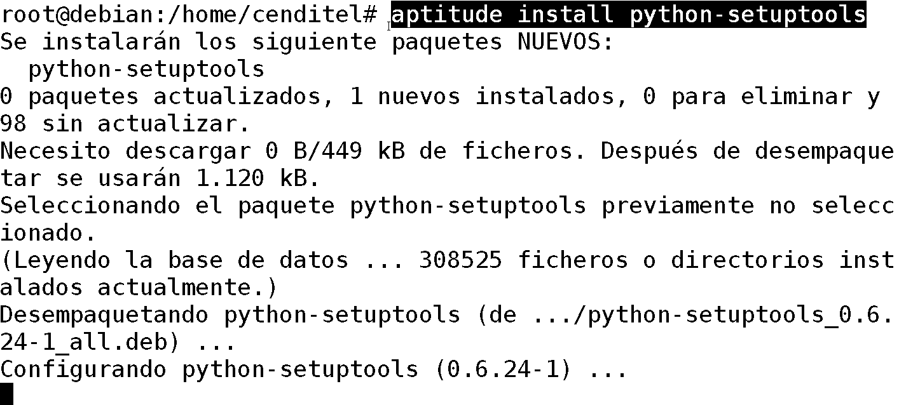

biblioteca de Python para usar “Safet”, un flujo de trabajo y la biblioteca electrónica de la firma.
| Se Agrega el repositorio al archivo: | |
|---|---|
| /etc/apt/sources.list | |
deb http://tibisay.cenditel.gob.ve/repositorio wheezy main
| Obtener la clave: | |
|---|---|
| (GPG) | |
| del repositorio Debian, utilizando la siguiente línea de comandos: | |
|---|---|
# wget http://tibisay.cenditel.gob.ve/repositorio/apt-seguridad.gpg.asc
# apt-key add apt-seguridad.gpg.asc
|
|
| Luego ejecutamos: | |
|---|---|
# aptitude update # aptitude install pysafet
| Figura 6: | Istalación de pysafet. |
|---|
| Importación: | Dentro de la consola de python importamos safet para su uso |
|---|
>>> import Safet
>>> dir(Safet)
['MainWindow', 'ParsedSqlToData', 'SafetDocument', 'SafetVariable', 'SafetWorkflow',
'SafetXmlObject', 'SafetYAWL', '__doc__', '__file__', '__name__', '__package__']
| Otra formar de mostrar las funciones: | |
|---|---|
>>> for i in range(len(dir(Safet))):
... dir(Safet)[i]
...
'MainWindow'
'ParsedSqlToData'
'SafetDocument'
'SafetVariable'
'SafetWorkflow'
'SafetXmlObject'
'SafetYAWL'
'__doc__'
'__file__'
'__name__'
'__package__'
{kind=link}